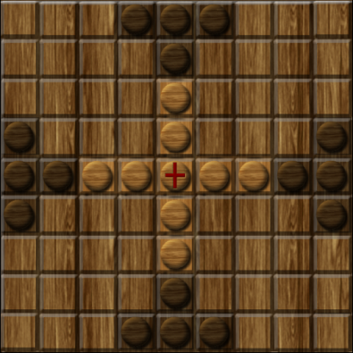
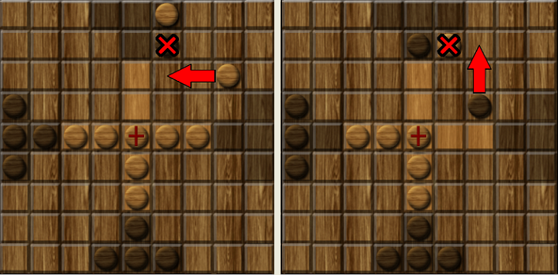

TABLUT

Ludowa gra planszowa Lapończyków przeznaczona dla dwóch graczy.
Została opisana po raz pierwszy przez szwedzkiego botanika i zoologa
Karola Linneusza w 1732 roku. Linneusz w swym podróżnym dzienniku
opisuje tablut jako grę rozgrywaną na planszy zrobionej ze skóry
renifera, należy do najlepiej udokumentowanych gier z grupy tafl,
popularnych w obszarze wpływów wikingów, Celtów i Germanów. Do gry
służy kwadratowa plansza podzielona na 81 pól (9x9) oraz zestaw
pionów: 16 czarnych i 9 białych, wśród których jeden, specjalnie
oznaczony, jest zwany królem. Czarne piony tworzą zwykłą armię,
natomiast białe tak zwaną armię królewską. W rozstawieniu początkowym
król jest umieszczany na środkowym polu, zwanym w języku lapońskim
konakis – „tron". Dookoła króla są stawiane piony armii królewskiej,
po dwa w rzędzie i kolumnie sąsiadujących z jego tronem. Czarne piony
zajmują miejsca przy brzegach planszy.
ZASADY GRY
- Wszystkie piony poruszają się w pionie lub poziomie o dowolną liczbę pustych pól.
- Pion zostaje pojmany i usunięty z planszy, gdy przeciwnik zajmie dwa sąsiednie pola w rzędzie lub kolumnie. Pion może jednak bezpiecznie wejść na puste pole pomiędzy pionami przeciwnika.
- Król zostaje pojmany gdy jest otoczony z czterech stron przez wrogie piony albo gdy jest otoczony nimi z trzech stron, a czwartą jest tron – środkowe pole planszy. To kończy grę wygraną atakujących.
- Obrońcy wygrywają, gdy król dotrze do krawędzi planszy. Gdy gracz zauważy taką możliwość musi ostrzec przeciwnika mówiąc: Raichi! Gdy możliwe są dwa sposoby dotarcia do skrajnych pól musi powiedzieć: Tuichi!, co jest odpowiednikiem mata w tablucie.
